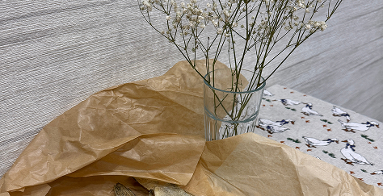

Ваня Денисов
1/3
203
Так красиво сегодня на улице! Настоящая зима)) Вспоминается Бродский: «Поздно ночью, в уснувшей долине, на самом дне, в городке, занесенном снегом по ручку двери...»
2 часа назад
Лиза Дёмина

999
Текст поста Текст поста
1 января 1970 года